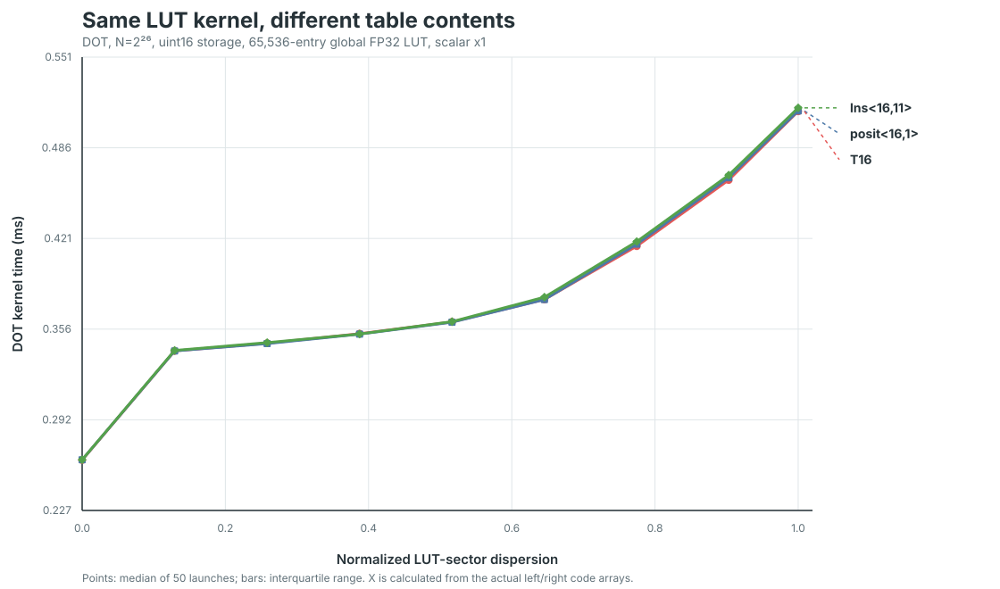

Does LUT content affect the dispersion curve?
Three 16-bit formats use the same uint16 → global FP32 LUT → FP32 DOT kernel. The code arrays are byte-for-byte identical across formats at every dispersion point; only the 256 KiB table contents change.
